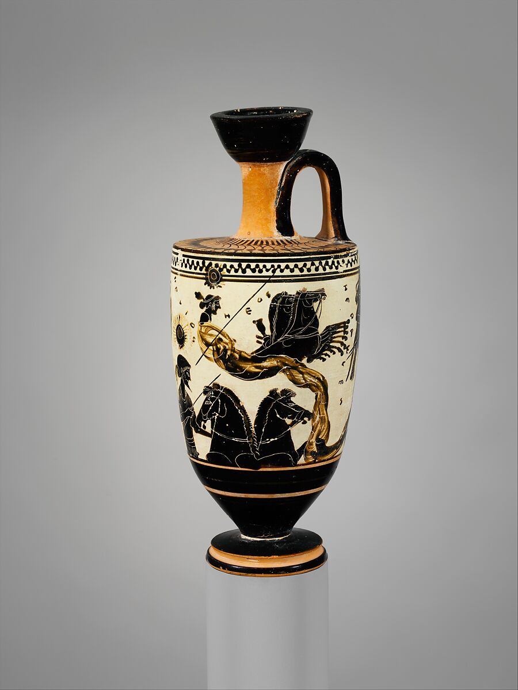

.jpg)
.jpg)
.jpg)

This lekythos depicts a scene from the tenth labor of Herakles. The 10 labors came from when he was tricked by Hera into killing his own children. Consequentially, Herakles exiles himself. He then speaks to Delphi who tells him he must perform the labors for Eurystheus for 12 years in order to be forgiven and become immortal. Although it is defined as performing the 10 labors, Eurystheus gives Herakles 12 as he does not count two of them (Apollodorus Bibliotheca 2.4.12). Also pictured is Helios, the sun god. During the tenth labor, Herakles is told to get the “kine of Geryon” (Apollodorus Bibliotheca 2.5.10.1) from the island of Erythia. To get there, Helios offers his golden goblet to cross the ocean in. In most cases, this vase is interpreted this way, but it could also be the moment when Herakles travels to the underworld to get Cerberus—the three headed dog of Hades (Eidinow, 2015, p. 55). The scene portrayed is never explicitly described in this way, but rather a combination of different texts.
In Bibliotheca, Herakles gets this goblet when he attracts the attention of Helios when he, “bent his bow at the god, who in admiration of his hardihood, gave him a golden goblet in which he crossed the ocean” (Apollodorus Bibliotheca 2.5.10.7-9). Instead of sacrificing to the gods, he stands his ground and challenges Helios until he is asked to stop. The combination of knowing when to stop his antics and the courage to take the risk in doing so was appealing to Helios and was the reason for providing Herakles with his golden goblet (Grollios, 1984, p. 19). However, Herakles is seen sacrificing in order to get the goblet. This is the more traditional approach to asking gods for favors instead of potentially invoking their wrath. There are two other characters who appear—Nyx and Eos-Hemera. These two goddesses are never mentioned in Herakles' labors but are often associated with Helios as they all control the cycle of day and night.